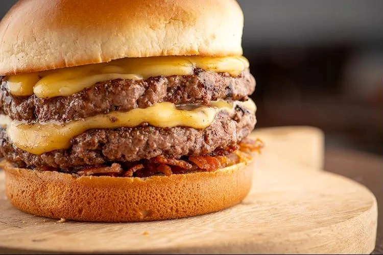
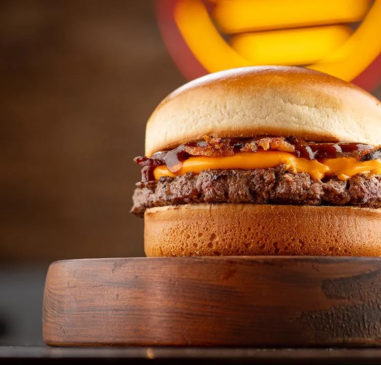

Delivery
Peça pelo cardápio online da casa: escolha os lanches, calcule a taxa e o tempo de entrega e acompanhe o pedido.
Pedir online ↗Classic Burger★Poços de Caldas
Carne 100% bovina feita na casa todos os dias, chapa bem quente, sal e o autêntico pão brioche. Sem conservante, sem textura industrial.


Conheça a casa
A Dona Dulce é uma hamburgueria artesanal do Centro de Poços de Caldas que aposta no clássico: fazer o básico muito bem feito.
A carne é fresca e preparada diariamente na própria casa, 100% bovina, sem conservantes. O hambúrguer de 160g vai para a chapa bem quente e chega no autêntico pão brioche — do Cheese Burger ao Dona Dulce, com duas carnes somando 320g. E a batata frita é crocante e sequinha até mesmo no delivery.
Nosso cardápio
Todos os lanches, combos, porções e bebidas da casa. De terça a quinta tem ofertas exclusivas no cardápio online.
Faça seu pedido
Peça pelo cardápio online da casa: escolha os lanches, calcule a taxa e o tempo de entrega e acompanhe o pedido.
Pedir online ↗Faça o pedido online ou pelo WhatsApp e retire no balcão de delivery: Rua Assis Figueiredo, 407 — Centro.
Chamar no WhatsAppVenha comer na chapa: salão na Rua Assis Figueiredo, 376 — Centro, de terça a domingo, a partir das 18h.
Ver horários e mapaAvaliações
“Melhor Hamburgueria de Poços de Caldas (…) Gosto sempre de pedir o Hambúrguer Dona Dulce, com duas carnes, extremamente suculentas.”
“Um dos melhores hambúrgueres que já comi na vida! (…) A batata completa também estava perfeita, bem sequinha e com um catupiry de ótima qualidade.”
“Local super aconchegante e onde se consegue ver o verdadeiro protagonismo da carne preparada na casa diariamente.”
“Sem chance de ir para Poços e não bater o ponto na Dona Dulce! Melhor hambúrguer da vida, carne perfeita, no ponto e fritas crocantes.”
“O lanche é bom, mas a batata frita é boa demais e não seria exagero dizer que é uma das melhores que já comi.”
“O melhor e mais saboroso lanche de Poços, com destaque para o ‘Franguito’!”
Galeria
Planeje sua visita
| Terça | 18h – 23h |
|---|---|
| Quarta | 18h – 23h |
| Quinta | 18h – 23h |
| Sexta | 18h – 23h30 |
| Sábado | 18h – 23h30 |
| Domingo | 18h – 23h |
| Segunda | Fechado |
Horários conforme o perfil da casa no Google. Em feriados, confirme pelo WhatsApp.
Contato